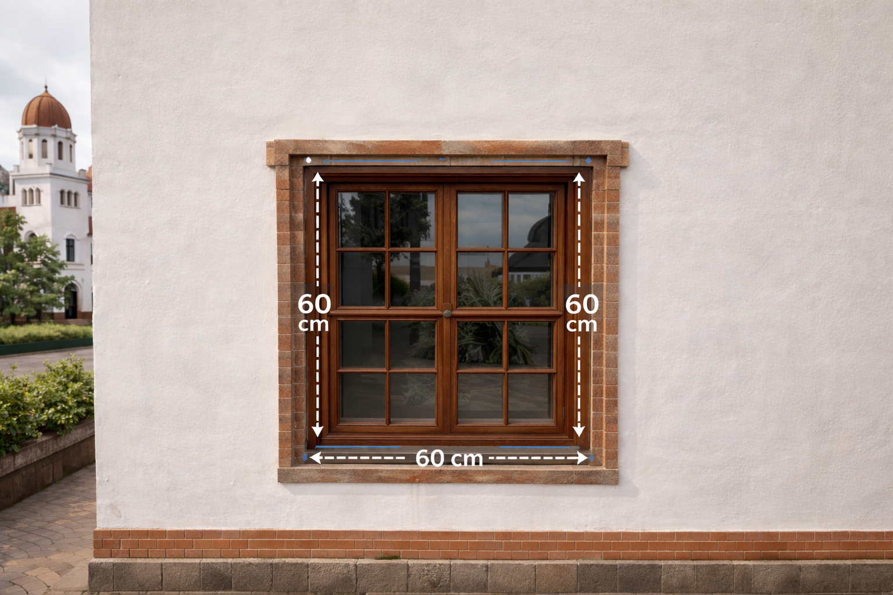
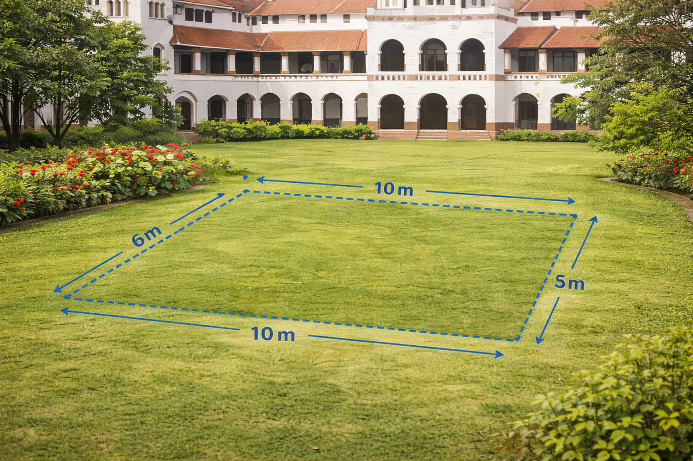

1. Persegi
Ditemukan pada pola ubin lantai Lawang Sewu yang tersusun simetris.
Luas (L) = s × s
Keliling (K) = 4 × s
Keterangan: s = sisi
2. Persegi Panjang
Bentuk dominan pada pintu dan jendela tinggi bangunan Lawang Sewu.
Luas (L) = p × l
Keliling (K) = 2 × (p + l)
Keterangan: p = panjang, l = lebar

3. Segitiga
Terdapat pada struktur atap bangunan Lawang Sewu.
Luas (L) = ½ × a × t
Keliling (K) = s1 + s2 + s3
Keterangan: a = alas, t = tinggi
4. Trapesium
Bentuk atap bangunan Lawang Sewu menyerupai trapesium.
Luas (L) = ½ × (a + b) × t
Keliling (K) = Jumlah seluruh sisi
Keterangan: a & b = sisi sejajar, t = tinggi
5. Jajar Genjang
Terlihat pada ornamen pagar dan ventilasi bangunan tua Lawang Sewu.
Luas (L) = a × t
Keliling (K) = 2 × (a + b)
Keterangan: a = alas, b = sisi miring, t = tinggi
Contoh Penerapan Etnomatematika
Elemen arsitektur Lawang Sewu menampilkan bentuk segitiga pada bagian atap.
Saat berdiri di halaman luar Lawang Sewu
Bagian atap kecil di Lawang Sewu berbentuk segitiga sama kaki dengan alas 6 meter dan tinggi 4 meter. Berapakah luas permukaan tampak depan atap tersebut?
Keterangan: a = alas, t = tinggi
Latihan Interaktif
1️⃣ Sebuah jendela berbentuk persegi memiliki sisi 60 cm. Berapa kelilingnya?
2️⃣ Sebuah taman berbentuk persegi panjang memiliki panjang 10 m dan lebar 6 m. Hitunglah luasnya.
